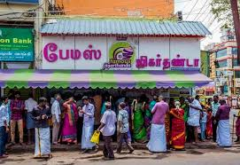
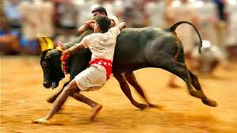
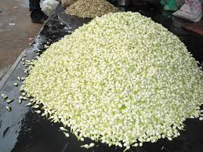

madurai
This is a wider card with supporting text below as a natural lead-in to additional content. This content is a little bit longer.
Last updated 3 mins ago
Koodal Aḻagar Temple or "Koodal Allhagar Temple" in Madurai, a city in the South Indian state of Tamil Nadu, is a temple dedicated to the Hindu god Vishnu. Constructed in the Dravidian style of architecture, the temple is glorified in the Naalayira Divya Prabandham, the early medieval Tamil canon of the Alvar saints from the 6th–9th centuries CE. It is one among the 108 Divya Desams dedicated to Vishnu, who is worshipped as Viyooga Sundarrajan, and his consort Lakshmi as Mathuravalli.[1] A granite wall surrounds the temple, enclosing all its shrines. The temple has a five-tiered rajagopuram, the gateway tower. The temple is originally believed to be built by the Pandyas, with later additions by the Vijayanagara empire and Madurai Nayaks kings who commissioned pillared halls and major shrines of the temple during the 16th century.
The term "Jigarthanda Temple" is a misnomer. Jigarthanda is a popular cold beverage from Madurai, not a temple. The famous Meenakshi Amman Temple in Madurai is often associated with Jigarthanda, as it's a popular spot to enjoy the drink. The temple is a major landmark and a popular tourist destination in Madurai.
Jallikattu, the traditional bull-taming sport of Tamil Nadu, is deeply intertwined with the cultural and religious landscape of Madurai. While there isn't one specific "Jallikattu temple," many Jallikattu events are held near or around temples, and the sport itself is often seen as a celebration of rural valor and a part of the region's cultural heritage.
Madurai Malli is a type of jasmine grown in the South central region of the Indian state of Tamil Nadu.[1] It was declared as a Geographical indication in 2012-13 and was the first flower from the state to be accorded the status.[2][3] Madurai malli is a type of jasmine cultivated in the districts of Madurai, Virudhunagar, Theni, Sivadangai and Dindigul. The flowering plants have been cultivated since 300 BCE with references from Sangam literature and temple art. The flowers are known for its unique smell and fragrance